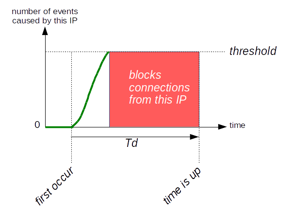
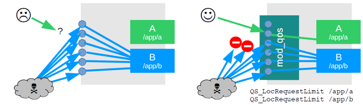
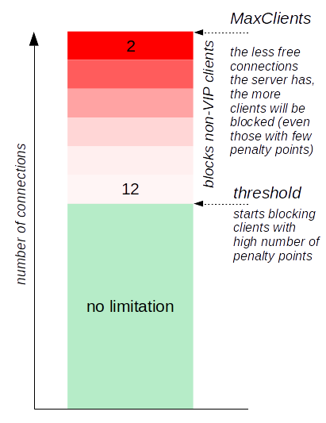

Denial of Service Defense
mod_qos cannot only be used to implement QoS by controlling your Apache web server's traffic but may also help you to protect your web site against denial of service (DoS) attacks. The two features of mod_qos which are particularly suitable to help you in doing this, are the possibility to measure the bandwidth used for a TCP connection (and the possibility to enforce that the requirements concerning the minimum bandwidth is fulfilled) and the existence of event counters per client's IP addresses (allowing you to limit the number of events a client is allowed cause on your web site).
Note: Multiple users may share an IP addresses (IP address is not unique per user) when using an intermediate proxy server or source NAT. This is especially true for B2B applications.
This documentation shall give you an idea on how you could use mod_qos within your Apache web server to defense against the following DoS attacks:
- Low-bandwidth DoS attacks
The attacker tries to keep many TCP connections to your web server open, only sending partiality request data periodically (just enough not triggering any inactivity timeouts). The target is to occupy all available connections (running threads of your Apache server) so that nobody else can connect. - HTTP GET/POST flood DoS attacks
The attacker sends a huge amount of HTTP requests to your web server without awaiting the server's response. This requires only little traffic for the attacker but may occupy your server's threads and consumes computing resources (CPU, memory). Some attackers scan your web site prior an attack measuring the duration it takes to answer the request in order to find out which one are the "most expensive" HTTP requests (consuming most time while being processed by your web server).
The following is a step-by-step checklist about potential configuration options you want to apply to improve your Apache server's DoS resistance. It shall give you an idea about which parameter you might want to set, to build an additional protective layer against DoS attacks. Nevertheless, I recommend you to read the detailed configuration options of each command which you intend to use to learn all about the different possibilities.
Note: If you are under an attack, it's no a question whether someone is blocked or not, but who. mod_qos helps your web server to make the right decision. Your job is to set the thresholds matching your infrastructure. You might either decide to have these rules active all the time or just as part ot your incident response plan.
- Basic Settings
- Connections per IP
- Minimum Data Rate
- Repeat Offender
- Requests per IP
- Separation
- Country Specific Rules
- Prefer Known Clients
- Size Restrictions
- Kernel and iptables
- Inform Others
Basic Settings
Hardware is inexpensive. Today's CPUs offers many cores allowing you to run
many threads in parallel and prices for memory are as low as never before.
So please allow your Apache server to serve many requests / TCP connections in
parallel by setting a "high" value for its MaxClients resp. MaxRequestWorkers  parameter (and the corresponding
parameter (and the corresponding ServerLimit/ThreadsPerChild
values). I'm going to use 896 in the following examples. This is not
an absolute value. Its probably not even a particular "high" value if you
are fighting against a low-bandwidth DoS attack. Maybe it is fine
for a quad-core Intel CPU serving several thousand concurrent users
(assuming you are running the Apache server as your web tier only and
not using more than half of the possible connections in the normal
case - the upper half is only a reserve for exceptional situations, better
if you have even more reserves as over-provisioning may be really helpful)
but you might choose a different value suitable for your environment
(note that each tread requires about 1 to 2 MB of memory). Just adapt
all other values mentioned on this page accordingly.
Other important Apache base settings concern timeouts.
One is the TimeOut
directive defining the idle timeout while waiting for data on the network
socket, the other directive is
KeepAliveTimeout , telling the Apache
server for how long to wait for a subsequent request before closing an idle
connection. Keep-Alive is an important feature to accelerate your web server
but you should disable it if the server runs out of free connections.
Disabling Keep-Alive will give more users a chance to connect to your
server and send a HTTP request if your server becomes too busy and don't
has any free slots anymore. mod_qos's QS_SrvMaxConnClose directive allows you to disable Keep-Alive
in such a situation automatically.
# maximum number of active TCP connections is limited to 896 (limited # by the available memory, adjust the settings according to the used # hardware): MaxClients 896 # idle timeout (while the server is waiting for TCP packets): TimeOut 5 # keep alive (enabled, but only until 80% of all connections are busy): KeepAlive on KeepAliveTimeout 2 MaxKeepAliveRequests 40 QS_SrvMaxConnClose 80% |
Connections per IP
There is no reason to allow a single IP address to open an unlimited number of
TCP connections. The QS_SrvMaxConnPerIP
directive can be used to limit the connections a single IP is allowed to open.
# don't allow more than 30 TCP connections per client source address # if the server has 500 or more open connections: QS_SrvMaxConnPerIP 30 500 |
Minimum Data Rate
The definition of a minimum upload/download throughput a client must generate
(the bytes sent/received by the client per seconds) is a very important protection
mechanism against low-bandwidth DoS attacks.
The QS_SrvMinDataRate directive
can be used to implement this rule.
QS_SrvMinDataRate <bytes per second> <max bytes per second> <connections>It offers three parameters. The first defines the
minimum data rate a client must achieve if the server would be idle
(no connections) and the second parameter defines the throughput
a client must achieve in addition when the server reaches its MaxClients
setting (at maximum number of connections). The third parameter defines the
number of busy connections (at low number of connections) to enable this
restriction.

# minimum request/response data reate if the server has 500 or more # open connections: QS_SrvMinDataRate 120 1500 500 |
You might also want to have a look at the Apache module
mod_reqtimeout
(available since Apache 2.2.15) which may be used to set various timeouts for
receiving the request headers and the request body from the client.
Repeat Offender
A very effective means of protection is the possibility to block client
IP addresses automatically for a certain period if they violate a rule
multiple times respectively if they cause errors many times.
The QS_ClientEventBlockCount
directive can be used to do this.
It defines how often a "block event" (the Apache
process environment variable
QS_Block) may occur during a
defined period of time. This enhances the effect of the above limitations.
Incoming TCP connections are rejected if a client IP address reaches
this threshold until the limitation expires.

The QS_SetEnvIfStatus is one of mod_qos's
directive which may be used to define an event which must not occur too frequently.
- 400 405 406 408 413 414 500
Status codes which may be caused by clients sending invalid or incomplete requests. - QS_SrvMinDataRate
Slow clients violating theQS_SrvMinDataRaterule (see above). - QS_SrvMaxConnPerIP
Clients opening too many TCP connections, seeQS_SrvMaxConnPerIPabove. - BrokenConnection
Clients closing/aborting the TCP connection before reading the the HTTP response (BrokenConnectionevent).
BrokenConnection in particular can be used to detect clients performing a HTTP GET/POST flood DoS attack.
The following example blocks clients if they cause more than 20 events within 5 minutes.
# block clients violating some basic rules frequently (don't allows more than 20 # violations within 5 minutes): QS_ClientEventBlockCount 20 300 QS_SetEnvIfStatus 400 QS_Block QS_SetEnvIfStatus 405 QS_Block QS_SetEnvIfStatus 406 QS_Block QS_SetEnvIfStatus 408 QS_Block QS_SetEnvIfStatus 413 QS_Block QS_SetEnvIfStatus 414 QS_Block QS_SetEnvIfStatus 500 QS_Block QS_SetEnvIfStatus QS_SrvMinDataRate QS_Block QS_SetEnvIfStatus QS_SrvMaxConnPerIP QS_Block QS_SetEnvIfStatus BrokenConnection QS_Block |
This is just an example of events you might want to limit. Feel free to add more or to ignore some events.
If you want to prevent from SSL DoS attacks as well (many SSL handshakes
initiated by the client), you might also want to block clients opening TCP
connections not sending any HTTP data. These clients may be marked using the
NullConnection event.
QS_SetEnvIfStatus NullConnection QS_Block |
Requests per IP
Rules, limiting a clients number of requests to a resource, may be configured
using the
QS_ClientEventLimitCount
directive. This provides an event counter per IP address and you may specify
how often a client is allowed to
trigger this event within a defined period of
time. Such a limitation might defense HTTP GET/POST flood DoS attacks,
especially if you know which requests are the most expensive ones / which
URLs provide the greatest risk of being attacked.
You may use any request attributes to distinguish between "expensive"
(resources your server takes long to process, e.g. a search function
requiring a query running against a database) and "inexpensive" (like static
resource files which can be send to the client immediately). You can also
define different attribues and configure more than one counter per IP
(each counter is idenitfied by the specified name).
One attribute could be the request's URL and you may use the
SetEnvIfPlus
directive to detect them and to increment the counter.
You can use the qslog tool
(option -pu) to analyze log data (or just use any other log data
management tool). You should not only search your Apache server's log about
"slow requests" but also check how many requests are issued by a single
IP address to decide what limitations you want to configure (which URLs
and how often).
For the following example, lets assume that requests to static resources
(jpg,gif,css,...) are cheap (quickly processed by your server) and other
requests expensive (takes long to be processed) while the most expensive
URL path is /generateReport.php. Therefore, you won't need
to set any penalty when accessing a static resource. Other resources
are marked by "1" (allowing a client to access them 20 times within two minutes)
while requests to the "most expensive" resource
/generateReport.php are burden by a
penalty of "2" (may be accessed only 10 times within two minutes).
It is also possible that you enable this limitation only if the server
reaches a predefined number of busy connections (no limitation if it is not
necessary).
You can achieve this by deleting the event variable (SlowRequest
in this example) if the server has less connections.
The QS_AllConn
variable tells you the number of busy TCP connections and the
QS_SetEnvIf directive
allows you to set or unset variables.
The following example unset the SlowRequest variable
as long as the server has less than 499 connections.
# don't allow a client IP to access a "handler" (not a static resource like # a jpg, gif, ..) more than 20 times within two minutes: QS_ClientEventLimitCount 20 120 SlowRequest SetEnvIfPlus Request_URI / SlowRequest=1 SetEnvIfPlus Request_URI /generateReport.php SlowRequest=2 SetEnvIfPlus Request_URI .*\.(jpg)|(jpeg)|(gif)|(png)|(js)|(css)$ !SlowRequest # disable any event counting if the server has less than 499 connections: QS_SetEnvIf QS_AllConn=^[1234]?[0-9]{1,2}$ !SlowRequest |
Clients violating these rules may times can be blocked for an even
longer period of time. This is implemented by a second counter, called
RepeatedlySlow in this example.
# deny a client IP for 10 minutes if he violates the rule above 3 times: QS_ClientEventLimitCount 3 600 RepeatedlySlow QS_SetEnvIf SlowRequest_Counter=20 RepeatedlySlow=1 |
Alternatively, the QS_Block variable
could be set to incremented the
QS_ClientEventBlockCount
counter in the case of a repeated rule violation (to block clients at a
connection level extending the list of events defined
above).
Separation
Your site might hosts multiple web applications of different importance. An
unimportant application can be prone to a HTTP GET/POST flood DoS attack.
To minimize the influence of such an application on others, you can limit the
allocable resources using the
QS_LocRequestLimitMatch or
QS_LocRequestLimit
directive. These directives allow you to limit the number of
concurrent requests
to certain URLs.

You can either separate the entire URL namespaces of different applications or you configure
QS_LocRequestLimitMatch /
QS_LocRequestLimit
rules for those URLs which are particularly vulnerable to be exploited
(requests that require a long processing time).
Country Specific Rules
Some web sites may have content that is only of regional interest, e.g., a site whose content is written in German has probably most visitors from countries where German is a national language. This allows you to deny clients connecting from other countries in the case your server runs out of free TCP connections.
# loads the GEO IP database and allows only client connections from # Germany, Austria or Switzerland if the number of busy connections # server reaches 700: QS_ClientGeoCountryDB conf/GeoIPCountryWhois.csv QS_ClientGeoCountryPriv DE,AT,CH 700 |
The geolocation database file is a CSV file containing the following
fields: the double quoted
"176.10.86.0","176.10.87.255","2953467392","2953467903","GB","United Kingdom" "176.10.88.0","176.10.95.255","2953467904","2953469951","BE","Belgium" "176.10.96.0","176.10.127.255","2953469952","2953478143","CH","Switzerland" "176.10.128.0","176.10.227.63","2953478144","2953503551","SE","Sweden" "176.10.227.64","176.10.227.71","2953503552","2953503559","NO","Norway" "176.10.227.72","176.10.255.255","2953503560","2953510911","SE","Sweden" |
Prefer Known Clients
mod_qos may prefer "known" (aka VIP) client IP addresses in the case that too many clients access the server. "Known" clients are those which have once been identified by the application by setting the corresponding HTTP response header.
 Such identification may happen at successful user login. If your application does not authenticate users (anonymous access only), you might decide to identify known/friendly IP addresses by any other attributes, e.g., if your application can confirm that the client interprets JavaScript or by using a captcha. Connections from clients which are not known to mod_qos (never marked by the corresponding response header) are denied if the server runs on low TCP connection resources.
{kind=link}
mod_qos prefers clients which communicate with the server instantaneously and fast, and denies access for slow clients sending data irregularly, violating other rules or loading different content types than the majority of the other clients do. If the threshold to block unknown clients has been reached, the clients with the "worst" behavior are denied first.
The directive to enable this is feature called
QS_ClientPrefer. When
using this feature, you should define how to detect the "good" clients
using the QS_VipIPHeaderName
directive (as mentioned above: let your application add a special response header
if a user successfully authenticates). Alternatively, you can use the
QS_VipIPUser directive if you are using
an Apache authentication module such as mod_auth_basic to mark IP addresses
from which someone has successfully been authenticated.
It is also recommended to configure a static value for the
QS_ClientContentTypes
directive in order to avoid falsification of the reference values during an attack.
# mark an IP address from which someone has authenticated QS_VipIPUser # specify the threshold (busy connections) when mod_qos starts to prefer some clients: QS_ClientPrefer 80% # define what content type "normal" clients do access (this is just an example!): # html css/js images other 304 QS_ClientContentTypes 40 15 150 10 40 |
Preferring known clients also increases your server's resistance against
distributed denial of service (DDoS) attacks.
You might use the QS_CondEventLimitCount
directive in addtion to configure limitations only affecting unknown
clients while known clients might continue to access your server even
the configured threshold is reached.
Note: Clients marked as VIP
can pass the restrictions defined by the
QS_SrvMinDataRate and
QS_SrvMaxConnPerIP by
default.
You can use
QS_SrvMinDataRateIgnoreVIP and
QS_SrvMaxConnPerIPIgnoreVIP
if you want to change this (which is recommended in most cases).
Size Restrictions
There are two reasons why you would like to limit some request attributes
when fighting against DoS attacks. Having request line or header limitations
may lay open clients exceeding these limits exposing attackers trying
to hide themslef. The other one is that you don't want allow a client to
send too much data.
Three Apache core
and one mod_qos directives may be used to set limitations.
# limits request line, header and body: LimitRequestLine 7168 LimitRequestFields 35 LimitRequestFieldSize 7168 QS_LimitRequestBody 102400 |
Note: These parameters needs to be adapted to fit your web server's usage. Especially the request body size limitation. You might want to configure this limitation depending on the request's content type or increase the values for some URLs.
Kernel and iptables
You should also ensure to have the kernel parameters of your server adjusted to meet the requirements of a web server (many ports, short close timeouts).
Example:
# example settings net.core.somaxconn = 32000 net.core.netdev_max_backlog = 32000 net.ipv4.ip_local_port_range = 9999 61000 net.ipv4.tcp_fin_timeout = 30 net.ipv4.tcp_window_scaling = 1 net.ipv4.tcp_slow_start_after_idle = 0 |
Your firewall in front or your Apache web server also performs important tasks related to DoS prevention - but the configuration of your FW is out of the scope of this article. However, iptables can also be fun...
# limits the number of new connections (active after reaching the burst limit only): iptables -A INPUT -p tcp --dport 80,443 -m limit \ --state NEW --limit 60/minute --limit-burst 250 -j ACCEPT # limits the number of established/concurrent connections: iptables -A INPUT -m state --state RELATED,ESTABLISHED \ -m limit --limit 50/second --limit-burst 50 -j ACCEPT # limits the connections from a single source IP to 100: iptables -A INPUT -p tcp --syn --dport 80,443 -m connlimit \ --connlimit-above 100 -j REJECT |
Inform Others
You may want to inform other systems about client IP addresses which shall be blocked, e.g., to synchronize multiple Apache instances (using the web console), to configure iptables rules (to apply an IP address deny list for example), or to inform your ISP about clients which shall no longer be routed to your site. Watch your server's logs! The directives mentioned on this page may write event messages using the following identifiers when blocking clients.
QS_SrvMaxConnPerIP: mod_qos(031)QS_SrvMinDataRate: mod_qos(034)QS_ClientEventBlockCount: mod_qos(060)QS_ClientEventLimitCount: mod_qos(067)QS_ClientGeoCountryPriv: mod_qos(101)QS_ClientPrefer: mod_qos(066)